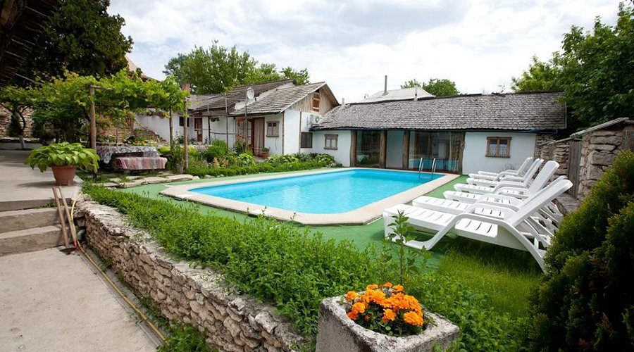
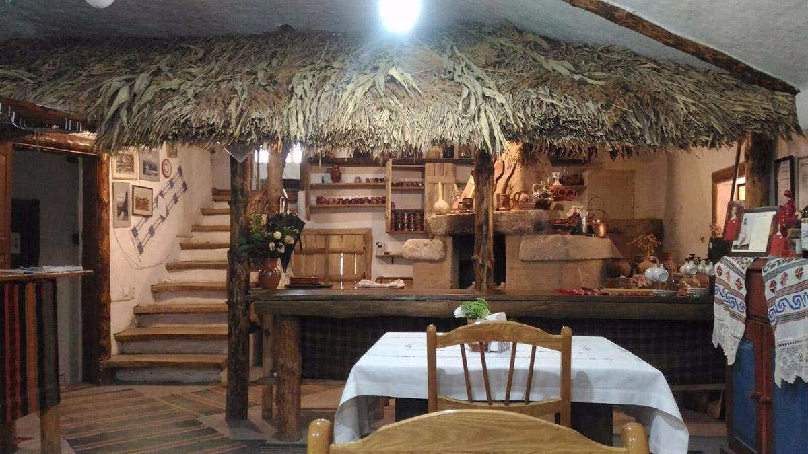

Gastronomie Moldovenească
Explorează aromele tradiționale ale Moldovei de la plăcinte și mămăligă, la sarmale și vinuri locale.
Restaurante Recomandate
La Taifas-Chișinău
Un restaurant rustic ce oferă mâncare tradițională, muzică live și decor autentic moldovenesc.

 Site-ul Web
Site-ul Web
Butuceni Eco Resort-Orheiul Vechi
O pensiune cu restaurant care servește bucate locale preparate după rețete moștenite din generație în generație.
  Site-ul WebVatra Neamului-Chișinău
Unul dintre cele mai cunoscute restaurante tradiționale din capitală, decorat cu motive rustice moldovenești.

 Site-ul Web
Site-ul Web
Popasul Dacilor-Chișinău
Situat într-un decor natural, restaurantul oferă o atmosferă arhaică și un meniu autentic.

 Site-ul Web
Site-ul Web